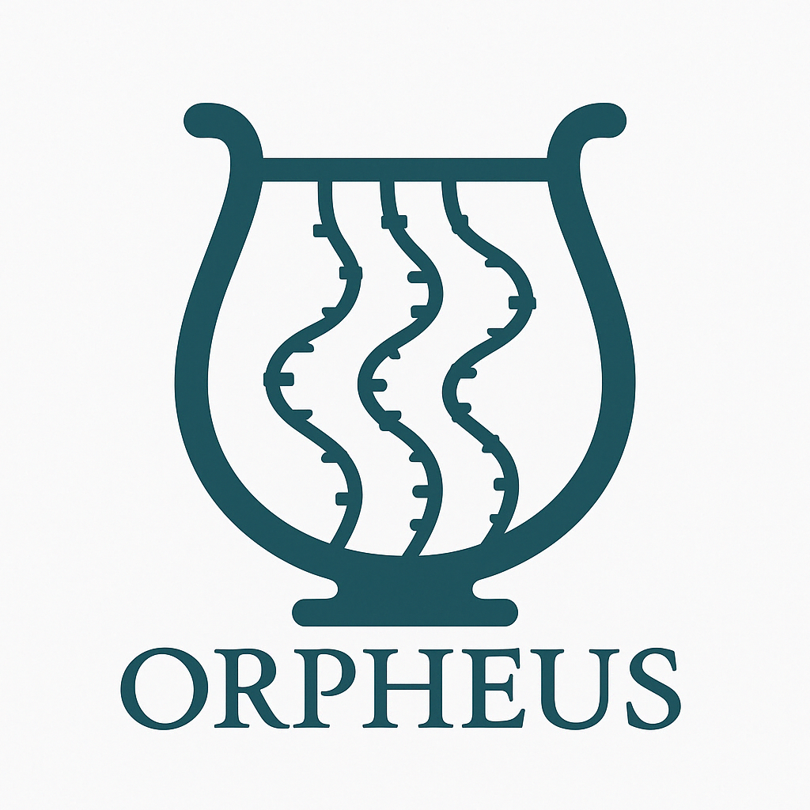

Inferring phase dispersion in single-cell rhythms using the Method of Moments
Orpheus is a bioinformatics toolkit for estimating phase dispersion in rhythmic biological signals at the single-cell level. Inspired by the mythical musician Orpheus, this software brings mathematical harmony to the analysis of asynchronous cellular rhythms by applying a modern Method of Moments framework.
The tool is designed for use with circadian gene expression data, and is suited for single-cell RNA sequencing datasets with multiple timepoints.
To install Orpheus, clone this repository and install the package.
See examples directory for help running Orpheus
📊 Features
Estimates phase dispersion using Method of Moments
Designed for single-cell circadian datasets with timecourse collection
Modular
Clean, interpretable output for downstream analysis
📁 Example Data
Example datasets and demo notebooks are available in the examples/ directory.
🤝 Contributing
We welcome contributions! Please check the issues tab or open a pull request.